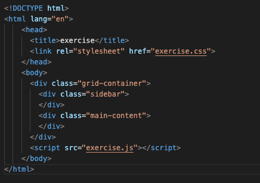
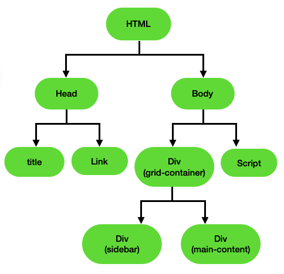
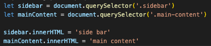
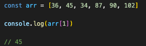
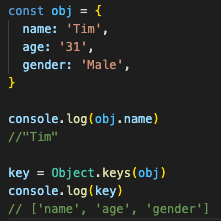

Aaron's Blog The blog of a programmer on web development
JavaScript and DOM
An analogy to describe JavaScript and its relationship to HTML and CSS.
If we consider a website as a building, HTML is the structure of the building, CSS is the interior and exterior decoration of the building and JavaScript is the actual functions that visitors can perform in each building.
Explain control flow and loops using an example process from everyday life.
The control flow is the order in which the computer executes statements in a script. Code is run from the first line to the last line in the file unless the computer runs across the structures that change the control flow, such as loops.
Loops are used in JavaScript to perform repeated tasks based on a condition.
The control flow is like the activities we do in the order every day: we do things one by one in the order, (such as wake up, brush our teeth, have breakfast, go to work, have lunch, go to work, have dinner, do some exercises and the like). The loop is like one activity (which we need to repeat doing something) on the day. For example, we do ten groups of sit-ups for exercises in the evening. We repeat it one group by one group.
Describe what the DOM is and an example of how you might interact with it.
The Document Object Model (DOM) is a programming interface for web documents. It represents the page so that programs can change the document structure, style, and content.
The DOM represents the HTML document as nodes and objects so that programming languages can interact with the page. It provides the missing link that ties your HTML and CSS with JavaScript.
For example, the code in the HTML file is the following:
The HTML DOM model is constructed as a tree of objects:
The JavaScript code is the following:
The first two lines grab the div elements by classes, and the last two lines assign the new values to the div element and show them on the web.
Explain the difference between accessing data from arrays and objects.
Arrays store the data in an ordered collection in which the data can be accessed using a numerical index, array[index]
For example:
To access the values in Objects, we can either use a dot operator followed by key name obj.key or a square bracket along with key in string format obj['key'] to access the value.
To access the keys in Objects, we can use Object.keys() function which returns an array of strings containing all of the object's keys, sorted by order of appearance.
For example:
Explain what functions are and why they are helpful.
Functions are self-contained modules of code that accomplish a specific task. Functions usually take in data, process it, and return a result. Once a function is written, it can be used over and over again. Functions can be called from the inside of other functions.
- Functions allow us to reuse code wherever it is required rather than rewriting it.
- Functions allow us to test small parts of our program in isolation from the rest.
- A variable in one function can only work in the function where the variable is. Function 1 can use a variable called i while Function 2 can also use a variable called i and they are not relavant. Each variable i only works when the computer is executing the given function.